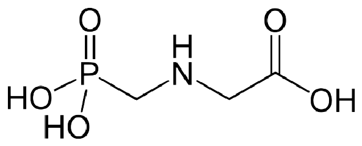

Herbicida: Glifosato
Estrutura
Glifosato
Função Orgânica
- • Fosforado
- • Amina
- • Ácido carboxílico
Classificação Toxicológica
Classificação 4 ou 5
Aplicações e Curiosidades
É utilizado para controlar plantas daninhas (anuais ou perenes). Ele é absorvido pela folhagem e transportado por toda a planta, assim nenhuma parte da planta sobrevive. Possui propriedades favoráveis para o meio ambiente, se liga firmemente ao solo, desta forma possui pouca mobilidade no solo, não atingindo águas subterrâneas. Também possui biodegradação microbiana em solo e água, alta solubilidade em água e é não volátil, portanto, não há contaminação atmosférica. Por outro lado, há evidências de efeitos nocivos no meio ambiente após o uso prolongado deste herbicida, principalmente devido à resistência ao glifosato adquirida por algumas espécies de ervas. Dependendo da dose não é tóxico para mamíferos.